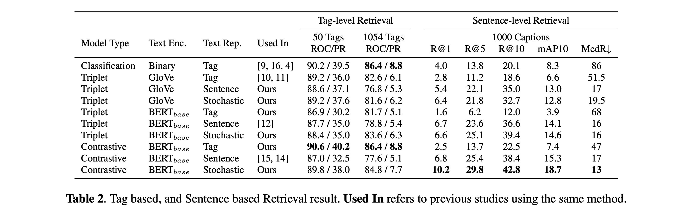

Toward Universal Text-to-Music Retrieval
Toward unified text-music representation learning, ICASSP 2023 (submitted) - SeungHeon Doh, Minz Won, Keunwoo Choi, Juhan Nam
This project maps text {tag, sentence} and music to the same embedding space. For the details of the methodology for building the dataset, please refer to our paper.
Motivation
Generalizable text-based music retrieval systems need to cover both tag-based and sentence-based queries. For example, ordinary listeners use simple tag-based queries to explore music libraries. Music creators may use sentence-based queries to retrieve more specific types of music. Content creators use content descriptions (less musical and often include unseen tags) to retrieve suitable music that matches their media content, such as photos and videos.
This paper introduces effective design choices of universal multi-modal representation learning for text-to-music retrieval. Our reusable insights are summarized as follows:
- For tags and sentence query, use stochastic text representations.
- For robust to unseen query, use contrastive loss.
- For sentence query (Specifically), use BERT text encoder.
Demo
The music pool in the demo was a test-set of the ECALS dataset. All samples were not used in the training phase. For space reasons, we compare tag, sentence and stochastic representations using the contrastive framework.
The key message of the demo is: the stochastic model shows robust search performance for tag, sentence, and unseen queries. Contrary to this, the sentence model has poor search performance for low popular specific instruments, such as banjo. The tag model is difficult to search for combinations in various semantics such as fusion jazz with synth, bass, drums, and saxophone.
fusion jazz with synth, bass, drums, saxophone (Sentence Query)
| Model | Similar Music 1 | Similar Music 2 | Similar Music 3 |
|---|---|---|---|
| Contrastive-BERT-Tag | |||
| hard bop, jazz, jazz instrument, strong, lively, saxophone jazz, nervous jittery, swinging | exuberant, swing, rollicking, amiable good natured, jazz, piano blues, big band, hanging out, joyous, tgif, late night, playful, .. | energetic, sophisticated, day driving, exuberant, searching, bright, bravado, intense, passionate, rollicking, confident, hard bop, ... | |
| Contrastive-BERT-Sentence | |||
| sophisticated, refined, soul, pop rock, amiable good natured, laid back mellow, jazz, contemporary pop rock, chill, synth pop, dance rock, punk new wave, new wave, ... | sentimental, amiable good natured, confident, sweet, in love, earnest, sensual, lively, romantic evening, funk, warm, rnb, heartache, intimate, summery, ... | smooth jazz, jazz, jazz instrument, mainstream jazz, saxophone jazz, contemporary jazz, crossover jazz | |
| Contrastive-BERT-Stochastic | |||
| energetic, exuberant, urban, rollicking, confident, gutsy, sweet, happy, sexual, brash, funk, warm, rousing, joyous, rnb, quiet storm, celebratory, playful, partying, cheerful, ... | 80s | energetic, soul, pop rock, passionate, rollicking, amiable good natured, confident, laid back mellow, latin rock, freewheeling, funk, rnb, summer, comfort, 70s, celebratory, ... |
Banjo (Tag Query)
| Model | Similar Music 1 | Similar Music 2 | Similar Music 3 |
|---|---|---|---|
| Contrastive-BERT-Tag | |||
| pop rock, alternative, folk, rock | exuberant, passionate, amiable good natured, new orleans, happy, romantic, rousing, joyous, celebratory, playful, rambunctious, france, ... | weary, passionate, reserved, reflection, contemporary folk, delicate, banjo, somber, earthy, autumnal, rustic, intimate, folk, acoustic, ... | |
| Contrastive-BERT-Sentence | |||
| folk, country | folk | international, klezmer, jewish music, freewheeling, fun, dramatic, folk, acoustic | |
| Contrastive-BERT-Stochastic | |||
| contemporary folk, delicate, gentle, drinking, light, cathartic, banjo, somber, earthy, the great outdoors, soothing, comfort, .... | maverick, searching, passionate, reserved, reflection, contemporary folk, autumnal, rustic, intimate, folk, autumn, acoustic, ... | romantic evening, blues, warm, dramatic, rousing, bright, bravado, yearning, passionate, confident, gutsy, relaxed, sweet, earnest, ... |
Music for meditation or listen to in the forest (Unseen Query)
| Model | Similar Music 1 | Similar Music 2 | Similar Music 3 |
|---|---|---|---|
| Contrastive-BERT-Tag | |||
| classical, folk | pop rock, beautiful, stagenscreen | pop rock, melancholy, dark, psychedelic | |
| Contrastive-BERT-Sentence | |||
| ambient | yearning, intense, passionate, experimental rock, whimsical, cathartic, indie pop, wistful, ambient, summery, the creative side, post rock, ... | indie, folk, rock | |
| Contrastive-BERT-Stochastic | |||
| pop rock, beautiful, indie | pop rock, electronic, darkwave, ethereal | traditional folk, earnest, literate, intimate, reflective, folk, plaintive, country |
Abstract
This paper introduces effective design choices of unified multimodal representation learning for text-to-music retrieval. We propose a benchmark that includes ten downstream tasks, carefully review existing approaches through a holistic evaluation, then summarize our findings to deliver reusable insights. We found that tag-level and sentence-level text representations are helpful for single-query and multi-query music retrieval, respectively. Thus we leverage both advantages by using a stochastic sampling method. Also, we found that contrastive-based models show more robust performance for unseen query retrieval and probing tasks. Based on these findings, the proposed approach achieves state-of-the-art performance across different music semantic understanding tasks.
What is stochastic text representations?
From our empirical study, we find that there is a strong association between text representation (train stage) and text query types (test stage). As somewhat obviously, the model works better when the input forms during the training phase and test phase are homogeneous, there are no references studying the relationship between text representation and retrieval performance. To use the advantages of both, we propose a stochastic text representation. During the training stage, we select K words from L length text sentence. At this time, K is uniformly randomly sampled among integer numbers from 1 (tag length) to L (sentence length). Unlike the dropout method, which determines the length by probability value, stochastic sampling has a dynamic input length.
What is contrastive loss?
The core idea of contrastive-based models is to reduce the distance between positive sample pairs while increasing the distance between negative sample pairs. Unlike triplet-based models, contrastive-based models can utilize a large number of negative samples that exist in a mini batch N. During training, the audio and text encoders are jointly trained to maximize the similarity between N positive pairs of (music, text) associations while minimizing the similarity for negative pairs. This is known as multi-modal version of InfoNCE loss.
Differences from other loss function
We explain the contrastive loss, classification loss, and triplet loss from the viewpoint of representation learning. Text-music representation learning aims to learn each encoder based on the similarity of audio embeddings and text embeddings. In this case, the classification loss uses a randomly initialized centroid embedding without a text encoder. The classification based model uses the similarity between audio embeddings and centroid embeddings as a prediction score. The prediction of annotated pair becomes a positive score (maximize), and prediction of un-annotated pair becomes negative score (minimize). However, the predefined centroid vector of classification is not suitable to cover the language, and updating all parameters at every moment is challenging.
On the other hand, triplet loss and contrastive loss do not use a fixed class centroid. Because positive and negative are sampled within a batch, learning is possible even if the vocabulary is large enough. Also, in the case of contrastive loss, all examples in the batch except for self are used as negative. This becomes an extreme classification case when the batch size is large enough.
Results
Table show the tag and sentence-based retrieval results. The stochastic representation model achieves competitive results in both tasks. In sentence-based retrieval, it outperforms the sentence representation model, but in tag-based retrieval, it performs closely to the tag representation model. This is because the dynamic length text representation encompasses both tag and sentence embedding space. See our paper for more results on different benchmarks, including MTAT, MTG-Jamendo, FMA, GTZAN, Emotify, KVT.
Visualization
MultiModal embedding spaces are projected to a 2D space using uniform manifold approximation and projection (UMAP). We fit UMAP with music, tag, sentence embeddings, then projected all embeddings into the 2D space. For each dataset, 1000 tag-caption pairs and 1054 tags used for evaluation were used. The first row uses a triplet framework with GloVe model. The second row uses a same triplet framework. with BERT model The last row uses a contrastive framework with BERT model. The contrastive model shows a more significant semantic gap than the other models. However, compared with the above results, it is difficult to see the relationship between the semantic gap and performance. Compared with the triplet, the stochastic model shows a smaller semantic gap than other tag and sentence models, and we interpret that each modality is mixed up. In the second column, the sentence-based model, the interesting part is that tag embeddings are isolated. This supports the example in the table above where sentence models showed low performance in tag-based retrieval. Contrary to this, sentence and tag are mixed up in tag-based model. However, since tags are a component of sentence embedding, we do not assume that the model captures the relationship between the two.
Conclusion
In this paper, we introduce effective design choices of generalizable multimodal representation learning for text-to-music retrieval. For the first time, we reveal relationship between text representation and retrieval performance through systematic experiments. Based on the finding, we propose efficient stochastic text representation. The proposed stochastic text representation show robust performance in tag-based, sentence-based, and zero-shot query retrieval cases and state-of-the-art performance on three datasets.